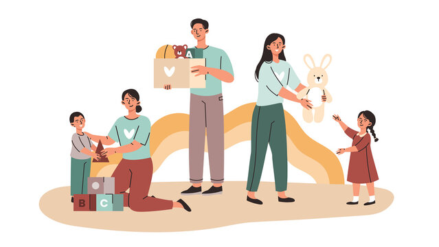
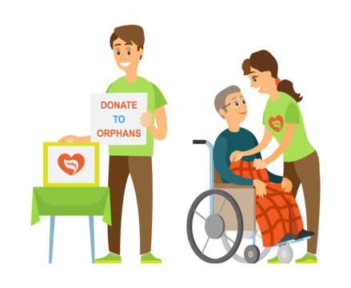
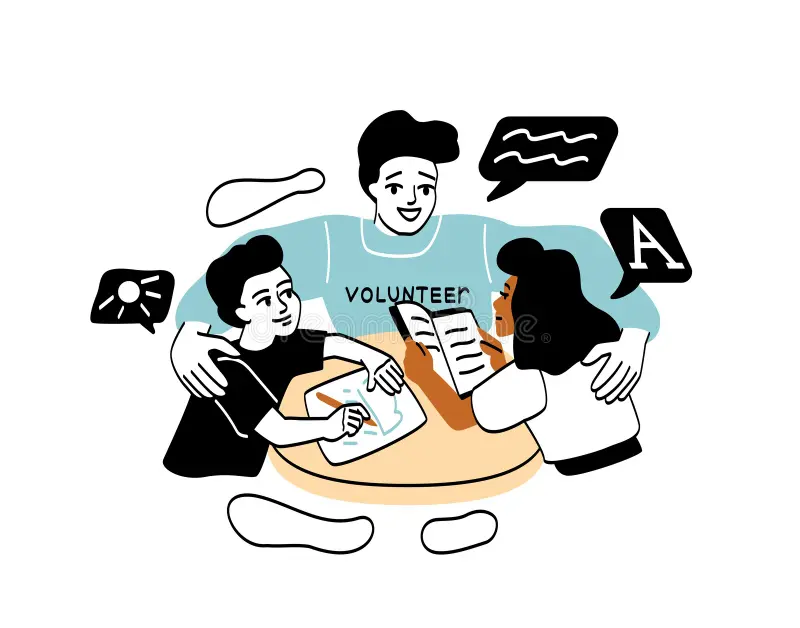

Bringing efficiency and transparency to orphanage management systems.
Get StartedOur mission is to support orphanages in managing their day-to-day operations efficiently. We focus on providing tools for child management, donation tracking, and volunteer coordination. With a user-friendly interface and powerful features, Orphan Guard empowers orphanages to operate with transparency and efficiency.

Manage children's profiles, medical records, and educational progress efficiently.

Ensure transparency by tracking donations and properly allocating funds.

Organize and schedule volunteers effectively, ensuring smooth operations.
Experience the full potential of our system. Sign up today!
Sign Up Now